Services
Five divisions with their own engineers, crews and machines. Together they let us take a road from the first trench to the last line of paint.
Roads
Main contractor on road projects since 2004. Before that, three years as a subcontractor.
We build new roads and rebuild old ones for Ashghal, from the earth works to the signals. Our largest road contract, Roads and Infrastructure in Doha Industrial Area, Package 1, was awarded in 2013 at QR 1.36 billion. Roads and Infrastructure in Al Ebb and Leabaib and the Roadside ITS programme are running now.
- Earth works
- Asphalt works
- Flexible surfacing
- Utility diversions; protection of existing and future services
- Street lighting
- Traffic signs and road marking
- Traffic signals
- Telecommunications (Qtel) works
- Landscaping and irrigation
- Hardscaping
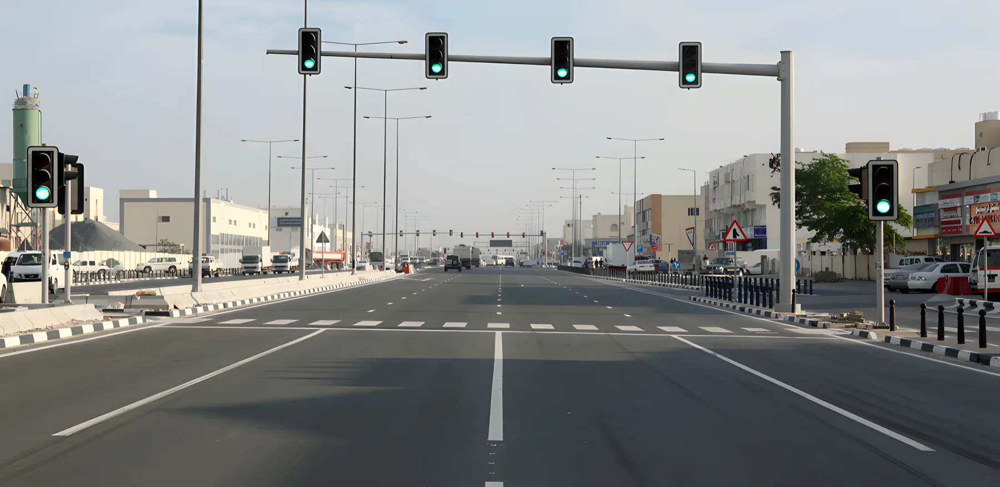
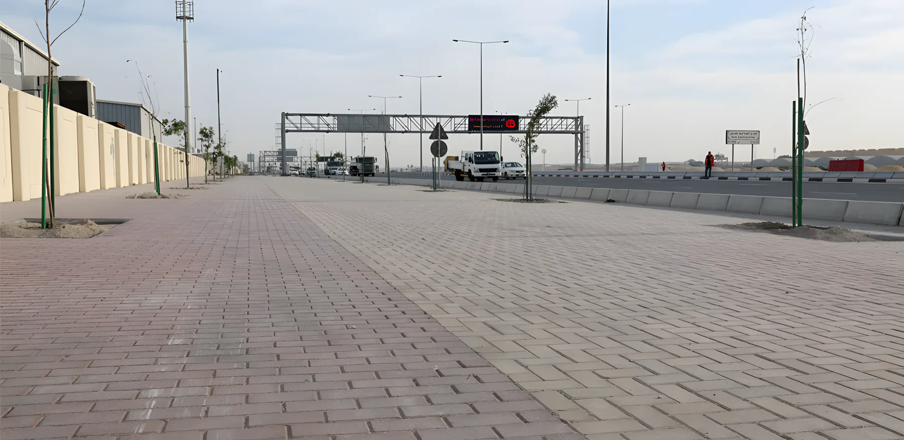
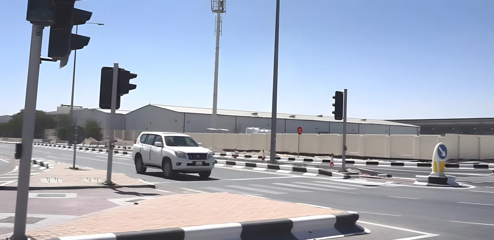
Pipeline and drainage
Where QTCG began: small house-connection contracts for the PWA in 1992.
After years of subcontract work we won our first project as main contractor in 1999. Since then we have built sewerage schemes across Doha and Rayyan, flow diversion schemes for pumping stations, and the Lateral Interceptor Sewer LIS-01. With Mirrikh Contracting W.L.L. we run work-order contracts for Ashghal's sewer repair and TSE maintenance frameworks.
- Potable water: mainline and house connections
- Treated sewage effluent (TSE) works
- Surface water drainage
- Sewer lines and drainage
- Pump stations
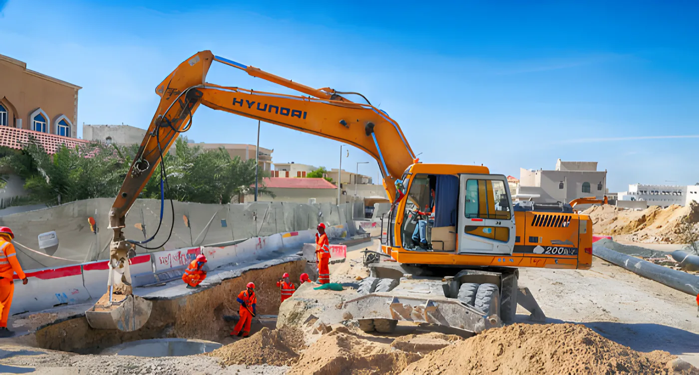
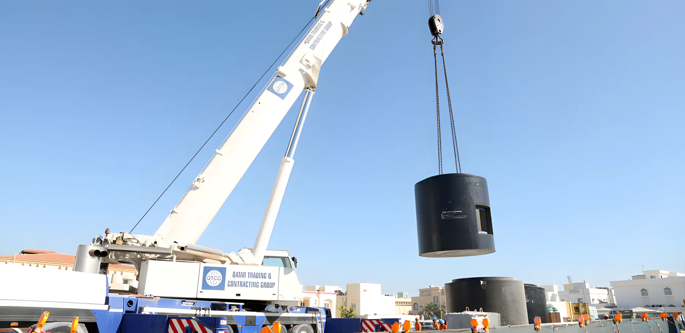
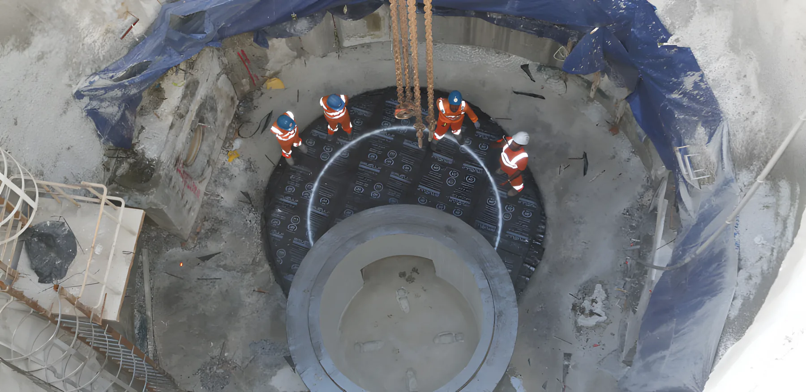
Micro-tunnelling, geo-drilling and grouting
Trenchless pipe-laying since 2003, so traffic and utilities on the surface keep running.
Our Tunnelling Division has its own machines, separate from the main plant department, and other contractors regularly bring us in to tunnel on their projects. The machines come from Herrenknecht in Germany. We recently added our own mobile rig for grout curtains.
- Micro-tunnelling (pipe jacking)
- Geo-drilling
- Grouting and grout curtains
- Subcontract tunnelling for other contractors
- Tunnel boring machines
- 13, Herrenknecht
- Jacking pipe inside diameter
- 200 – 3,000 mm
- Pipe length
- 2,000 – 3,000 mm
- Grouting
- Own mobile rig
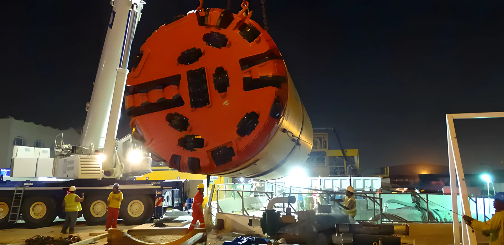
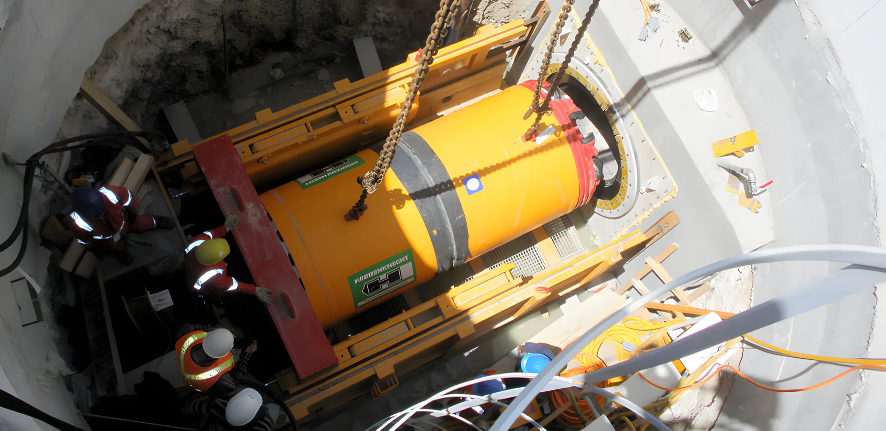
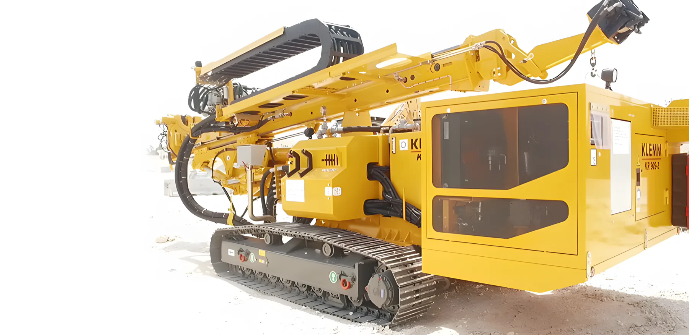
Workshop and plant hire
Our Plant and Heavy Equipment Division keeps every company machine running from its own workshop in the Industrial Area.
The same excavators, loaders, cranes and rollers that work on our projects are available for hire and for subcontract work. Call the office and we will tell you what is free and when.
- Maintenance of the full QTCG fleet
- Heavy equipment for hire
- Machines with operators for subcontract work
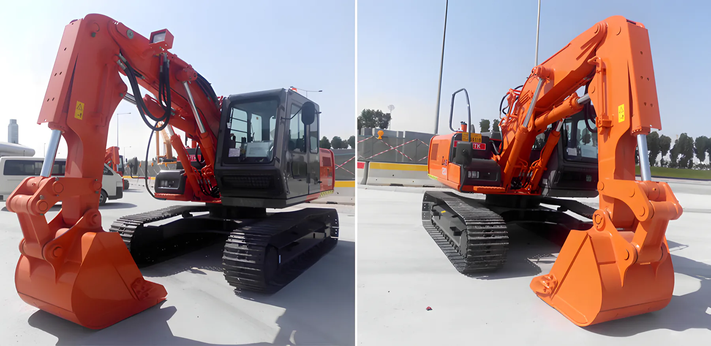
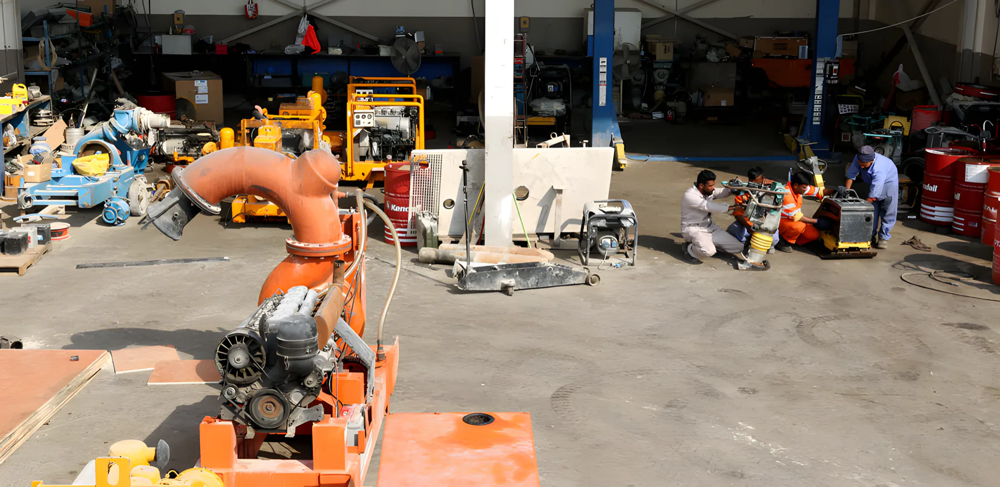
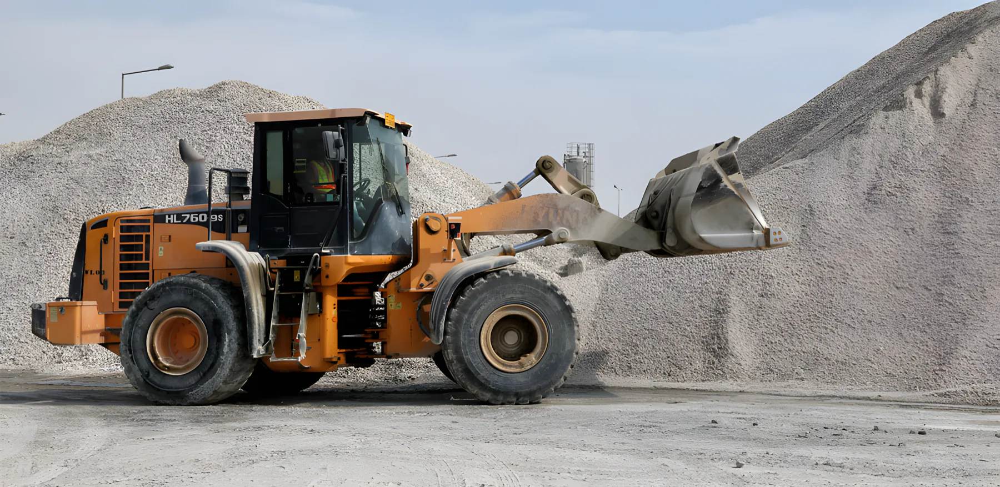
Crusher, concrete and precast
Aggregate, sub-base and concrete from our own plant, which keeps our projects moving.
Our crushers and screeners produce soil material, coarse aggregate and sub-base in different sizes. What our projects don't use, we sell to the local market. The concrete batching plant in New Industrial Area – West supplies concrete to high specifications.
- Coarse aggregate and sub-base
- Soil material in various sizes
- Ready-mix concrete
- Precast
- Batching plant
- New Industrial Area – West
- Maximum output
- 300 m³ a day
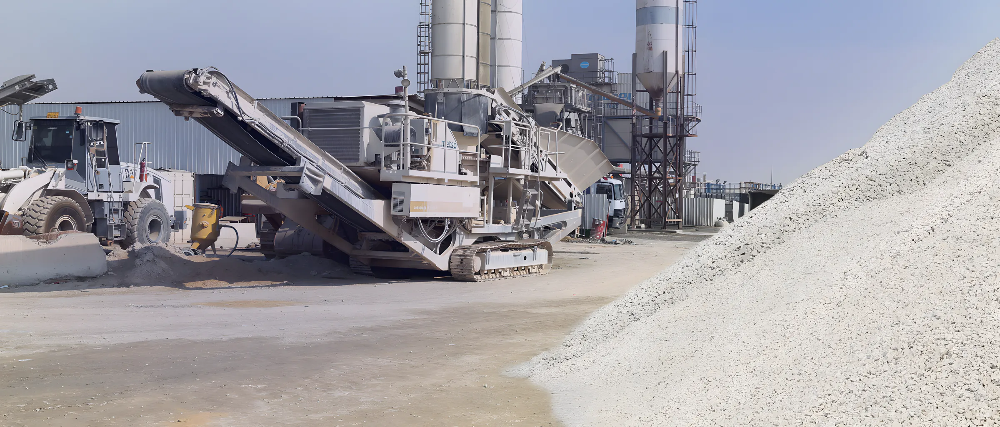
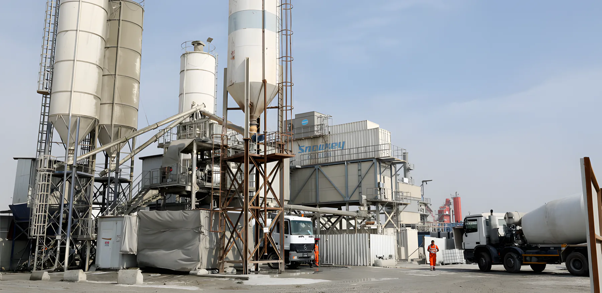
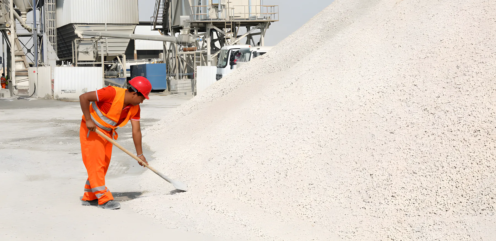